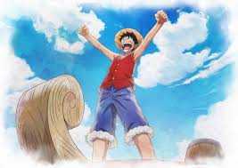
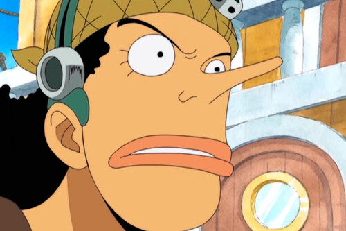
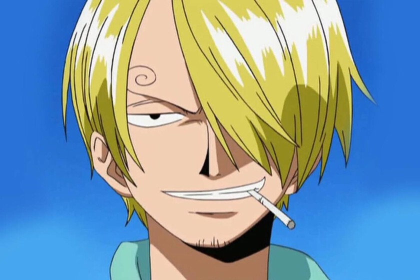
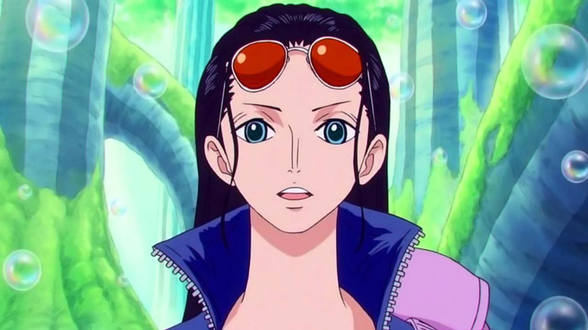

Cada miembro de la tripulación tiene un sueño único y una habilidad especial que los hace indispensables en el viaje por el Grand Line.


Capitán. Usuario de la fruta Gomu Gomu, que le permite ser un hombre de goma. Destaca por su voluntad inquebrantable y su deseo de libertad absoluta.

Combatiente y primer oficial. Maestro del estilo Santoryu (tres espadas). Es extremadamente leal y posee un sentido del honor inmenso, aunque un sentido de la orientación nulo.

Navegante. Posee una inteligencia brillante y la capacidad de "sentir" los cambios climáticos antes de que ocurran. Es el cerebro logístico del barco.

Francotirador. Aunque es miedoso por naturaleza, su valentía reside en enfrentar sus temores. Es un inventor ingenioso y un gran narrador de historias.

Cocinero. Un caballero que pelea usando solo sus piernas para no lastimar sus manos de chef. Su sueño es encontrar el All Blue, el mar donde convergen todos los peces del mundo.

Médico. Un reno que comió la fruta Hito Hito (modelo humano). Es un experto en medicina y el miembro más joven de la banda.

Arqueóloga. La única persona en el mundo capaz de leer los Poneglyphs (monolitos antiguos). Busca descubrir la "Verdadera Historia" del mundo.

Carpintero naval. Un cyborg que construyó el barco de la tripulación, el Thousand Sunny. Funciona a base de cola y es un genio de la ingeniería.

Músico. Un esqueleto viviente gracias a la fruta Yomi Yomi. Además de músico, es un habilidoso esgrimista que usa ataques gélidos.

Timonel. Un hombre-pez de la especie tiburón ballena. Representa la sabiduría, la fuerza bruta y la lucha contra la discriminación racial en el mar.